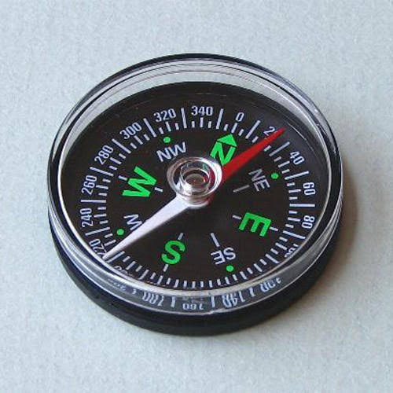
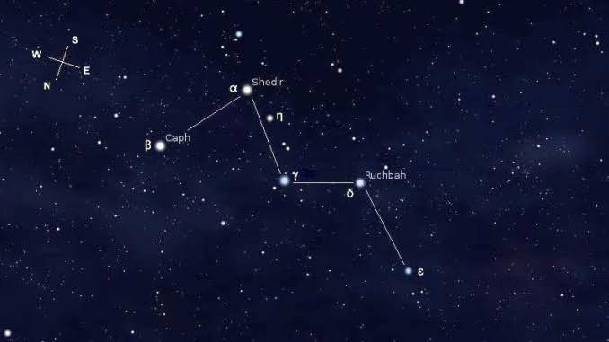

หลายท่านอาจมีข้อสงสัยว่าการดาวดูทําไมต้องใช้ทิศเหนือ ลองดูว่าถ้าหากเราแบ่งโลกออกเป็น 2 ส่วน ในแนว ละติจูดดังนั้นเราจะสามารถแบ่งโลกออกเป็นฉีกโลกเหนือและฉีกโลกใต้ประเทศไทยของเราตั้งอยู่บนพิกัดทาง ภูมิศาสตร์ระหว่าง 6 – 20 องศาเหนือ ดังนั้นเราจึงใช้ “ทิศเหนือ” เป็นหลัก แต่ถ้าหากผู้สังเกตย้ายไปประเทศ ออสเตรเลียซึ่งอยู่ทางฉีกโลกใต้ก็ต้องเปลี่ยนไปใช้ “ทิศใต้” เป็นหลัก แต่ตอนนี้ให้กลับมาที่ ทิศเหนือ ของเรา ก่อน
สําหรับนิยามของ “ทิศเหนือ” เราสามารถแบ่งออกเป็นได้ 2 อย่างคือ
1. ทิศเหนือจริง
2. ทิศเหนือแม่เหล็ก
ในการดูดาวนั้นเราจะใช้ “ทิศเหนือจริง” เป็นหลัก วิธีการหาทิศนั้นสามารถทําได้หลายวิธี เช่น ใช้เข็มทิศ หรือถ้าหากไม่มีอุปกรณ์ช่วยเหลือ เราก็สามารถ หาทิศได้จากการสังเกต จากการขึ้น-ตกของ ดวงอาทิตย์ ดวงจันทร์ ดาวเคราะห์ และกลุ่มดาว เป็นต้น
การใช้เข็มทิศ |
|
|  |
เป็นอุปกรณ์ชนิดหนึ่งที่หาซื้อได้ทั่วไปและใช้ง่ายที่สุด เนื่องจากปลายของเข็มทิศจะชี้ ไปทางทิศเหนือเสมอ แต่มีข้อควรระวังคือ อย่านําวัตถุที่เป็นโลหะมาไว้ใกล้ อาจทําให้เข็มทิศทํางานผิดพลาด |
การใช้ดวงอาทิตย์ |
|
|
เราสามารถหาทิศในเวลากลางวันโดยสังเกตการขึ้นตกของดวงอาทิตย์เนื่องจาก ดวงอาทิตย์จะขึ้นทางทิศตะวันออก และตกทางทิศตะวันตก เช่น ก่อนเที่ยงวันดวงอาทิตย์จะอยู่ทางซีก ตะวันออก และหลังเที่ยงวันดวงอาทิตย์จะอยู่ทางซีกตะวันตก ในขณะที่ตอนเที่ยงวันดวงอาทิตย์จะอยู่กลาง ศีรษะเราจึงบอกทิศไม่ได้ ดังนั้นเพื่อความแน่นอนควรสังเกตเป็นช่วงเวลาซักระยะหนึ่ง |
|
การใช้ดวงจันทร์ |
|
|
ดวงจันทร์เป็นอีกวัตถุหนึ่งที่สามารถช่วยเราหาทิศทางได้ โดยเราจะอาศัยการสังเกต เสี้ยวด้านสว่างของดวงจันทร์ และเวลาการขึ้นตกของดวงจันทร์ หากดวงจันทร์ขึ้นก่อนที่ดวงอาทิตย์จะตก ด้านสว่างของดวงจันทร์จะเป็นทิศตะวันตก หากดวงจันทร์ขึ้นหลังเวลาเที่ยงคืน ด้านสว่างของดวงจันทร์จะเป็น ทิศตะวันออก แต่วิธีนี้อาจจะใช้ได้ไม่ค่อยดีในช่วงดวงจันทร์เต็มดวง หรือใกล้เต็มดวง เนื่องจากดวงจันทร์จะ สว่างทั้งดวงทําให้เราไม่ทราบว่าจะใช้ด้านใดของดวงจันทร์เป็นด้านสว่าง |
|
การใช้กลุ่มดาว |
|
|
เราสามารถหาทิศจากกลุ่มดาวบางกลุ่ม ซึ่งจากตําแหน่งของกลุ่มดาว และทิศทาง ของกลุ่มดาวนั้นจะเป็นเครื่องบอกทิศให้กับผู้สังเกตในการหาดาวเหนือ (Polaris) และยังมีชื่อเรียกดาวอื่นอีก เช่นดาวไคนอซูรา (Cynosura) และอัลฟา เออร์ซา ไมนอริส (α Ursae Minoris) เป็นดาวฤกษ์ที่สว่างที่สุดใน กลุ่มดาวหมีเล็ก และอยู่ใกล้กับขั้วฟ้าเหนือ จึงปรากฏเสมือนอยู่นิ่งกับที่บนท้องฟ้า การที่ดาวเหนืออยู่ใน ทิศทางที่เกือบจะเป็นทิศทางเดียวกับแกนหมุนของโลก ดาวฤกษ์ดวงอื่นๆ จึงดูเหมือนเคลื่อนที่วนเป็นวงกลม รอบดาวเหนือ |
|
การหาดาวเหนือด้วยกลุ่มดาวหมีใหญ่ (Ursa Major) |
|
|
กลุ่มดาวนี้มีดาวสว่างเจ็ดดวงเรียงกัน ซึ่งบาง คนอาจเห็นเป็นรูปคล้ายๆ กระบวยตักน้ํา (Big Dipper) เมื่อเราลากเส้นผ่านดาวสองดวงแรกของกระบวยตัก น้ํา (ดาวดูเบห์(Alpha Ursae Majoris) กับดาวเมอแรก (Beta Ursae Majoris)) โดยลากจากดาวดูเบห์ไป ดาวเมอแรกตรงไปอีกประมาณ 4 เท่า ของระยะห่างระหว่างดาวทั้งสอง จะพบดาวที่มีแสงสว่างริบหรี่ดวงหนึ่ง นั้นก็คือ “ดาวเหนือ” ไม่ว่าทรงกลมท้องฟ้าจะหมุนไปอย่างไรก็ตาม ดาวเหนือก็จะปรากฏอยู่ที่ตําแหน่งเดิม ตลอดเวลา |
|
การหาดาวเหนือด้วยกลุ่มดาวค้างคาวหรือกลุ่มดาวแคสสิโอเปีย (Cassiopeia) |
|
|  |
ในช่วงที่กลุ่มดาว หมีใหญ่ตกลับขอบไปแล้วก็ยังมีกลุ่มดาวค้างคาวหรือกลุ่มดาวแคสสิโอเปียที่เราสามารถใช้หาดาวเหนือได้ เช่นเดียวกับกลุ่มดาวหมีใหญ่ ลักษณะของกลุ่มดาวค้างคาวเราจะสามารถสังเกตเห็นได้ง่ายเนื่องจาก กลุ่มดาวนี้ ประกอบด้วยดาวฤกษ์สว่าง 5 ดวง ที่เรียงตัวกันคล้ายกับรูปตัวเอ็ม (M) ซึ่งเมื่อเราลากเส้นแบ่งครึ่งผ่าน กลางกลุ่มดาวค้างคาวออกไปประมาณ 25 องศา ดังรูปที่ 3 ก็จะเจอดาวเหนือ ซึ่งกลุ่มดาวค้างคาวนี้จะอยู่ใน ทิศตรงข้ามกับกลุ่มดาวหมีใหญ่ ดังนั้นถ้าเห็นกลุ่มดาวค้างคาวกําลังจะขึ้น เราก็จะเห็นกลุ่มดาวหมีใหญ่กําลังจะ ตกลับขอบฟ้า |